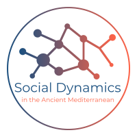

The SDAM project¶
SDAM stands for Social Dynamics and complexity in the Ancient Mediterranean, which is a research group at the School of Culture and Society at Aarhus University (AU).
|  |
{kind=link}
Objectives¶
The two mains outputs of this project are expected to be
A comparative study of proxies for evolution of social complexity in the Ancient Mediterranean.
Digital tools, workflows and processes that scale and that historians and archaeologists can use in their own research.
See SDAM Website
See SDAM on GitHub
R package sdam¶
Package Description¶
The R package “sdam” provides tools for performing analyses within Social Dynamics and complexity in the Ancient Mediterranean (SDAM) project.
(See “sdam” manual)
Currently, it is possible with sdam to access data from the Epigraphic Database Heidelberg API
with get.edh(), and the wrapper function get.edhw() as well. Most of the data is available
in the dataset attached to the package, which is called EDH.
For applications of these functions and use of this dataset:
Besides, the request() function allows performing different types of HTTP requests to a cloud
repository like DEiC’S https://sciencedata.dk or another customized URL address.
(See DEiC’s sciencedata.dk for applications of this function.)
Similarity by simple matching among column vectors is achieved by the simil() function in order
to make analyses of assemblages or artifacts. Note that this latter function still under early
development.
(See Epigraphic Networks using R for applications of this function.)
Package installation¶
You can install the sdam package from these GitHub repositories using the R console
or RStudio if you wish.
# install beta version
R> devtools::install_github("mplex/cedhar", subdir="pkg/sdam")
or
# install release candidate
R> devtools::install_github("sdam-au/sdam")
Note
Don’t forget to uninstall the package before installing it with another version.
News from sdam package¶
Version 0.5.0 released (19-04-2021).
rpmcddataset is updated.
Version 0.4.0 released (around March 2021).
New functions
plot.map(),dts()andcln(), and datasetsrpmandrpmcd
- Version 0.3.0 released (21-11-2020).
New functions
plot.dates()andprex()(cf. )rpdataset is added (v0.3.7)
Function
edhw()combines"people"with other EDH variables
Arguments select, clean, province, gender added to
edhw()Argument maxlimit added to
get.edh()Argument authenticate in
request()renamed to anonymous
- Version 0.2.0 released (19-5-2020).
New function
edhw()to extract fragments of theEDHdataset
Documentation website launched
Arguments force and rm.file added to
request()
- Version 0.1.0 released (6-5-2020).
First functions
get.edh(),get.edhw(),request(),simil(), andEDHdataset
(see also package’s manual )
Todo
Connect with GitHub
sdam-au\sdam\docs